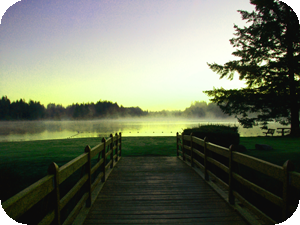
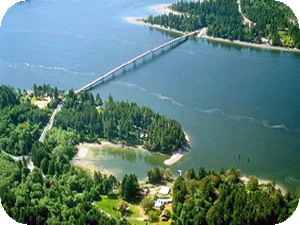

   |
The vision of Island Caretaker Services is to improve the security of your property and neighborhood by either having a qualified live in person or family in your unoccupied home or cabin or send out a person who routinely patrols your property on a daily, weekly or monthly basis. Criminals are less likely to target your home when they know that people are there or a person is monitoring your property. Many custom options exist such as full-time, part- time, guest house and a range of responsibilities for the caretaker. Points to ponder when considering using ICS: |
|
| Live-in Caretakers:
1. Live in Caretakers provide labor ( minor home repairs) and security in exchange for rent. Specific details vary according to your situation. Call for more info. 2. Live in Caretakers are guaranteed by ICS. We will provide background checks, credit reports, and other significant qualifications to insure that they will abide by the contract they sign. ICS is licensed and bonded. 3. We will check up on all live in caretakers on a weekly basis. |
Packages for property monitoring: Standard Package $100.00 per month includes: 4 patrols to your property per week (am and pm) Gate checks/ home check Perimeter check and outdoor visual inspection Custom Package $200.00 per month includes: 7 patrols to your property per week (am and pm) Gate checks/ home check Perimeter check and outdoor visual inspection Budget Package $50.00 per month includes: 4 patrols per month (am and pm) Gate check/ home check Perimeter check and outdoor visual inspection |
|